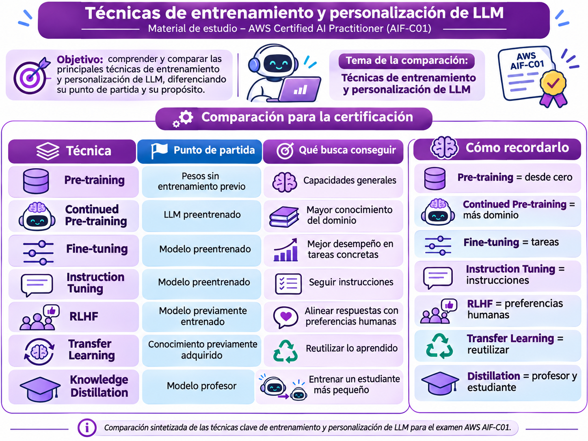

UNIDAD 8
Bloque 6 · Entrenamiento y personalización de LLM
Bloque 6 · Página 5 de 6 · Infografía
Comparación para la certificación
Punto de partida y objetivo de cada técnica para distinguirlas en casos de examen.

← Anterior
Siguiente →